Kenshi Mod Manager is a mod manager for the game Kenshi. With it, you can :
View and sort mods with various information invisible in the default mod window of Kenshi
Sort the load order with ddrag and drop
copy Steam workshop mod to the kenshi folder (to edit it or use mods without launching Steam)
Launch Game or Edior directly from the mod manager
Configuration Window
When you first start the program, you will see this configuration window:
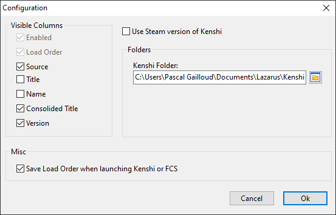
If you have bought Kenshi from Steam, you can check the box "Use Steam version of Kenshi" and new options will appear:
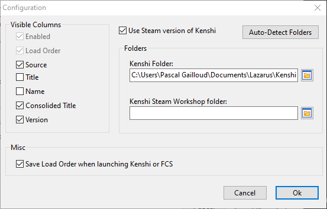
If you click the Auto-Detect Folders, the program will check steam confugration for kenshi and steamworkshop folders automatically, but if there is any errors in folders,
you can change them under afterward.
If you click Cancel at the first run, you will have an empty list in the main window until you give the right folder in the configuration window.
If you choose the wrong folder and click on Ok, you will get back to the configuration window with an error message.
Main Window
Tools Bar
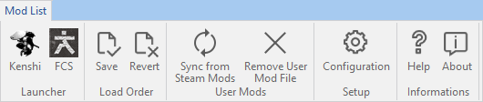
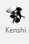
Kenshi
Launch the game Kenshi
FCS
Launch the Forgotten Construction Set (the Kenshi Mod Editor)
If you want to send mod to Steam workshop, you need to launch the FCS from Steam instead, or the link between Steamworkshop and FCS will not be done.
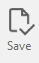
Save
Save the load order in order to be used by Kenshi
this can be done automatically when you launch kenshi within this interface by checking the right option in the configuation window
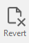
Revert
Revert UNSAVED changes
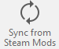
Sync From Steam Mod
If you use Steam Version, you can copy steamworkshop mod to kenshi user mods
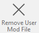
Remove User Mod File
Delete Selected User Mod from Kenshi mod folder
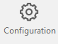
Configuration
Show the configuration Window
Help
Show this help
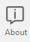
About
Show Program informations
List View
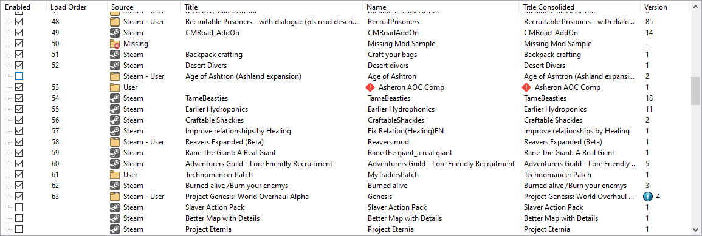
Columns
Enabled
Always Visible
Sortable: No
Add/remove the mod in the load order
Note: checking or unchecking boxes remove actual sorting.
Load Order
Always Visible
Sortable: Yes
Show the load order of the mods
Note: To change load order, this column need to be sorted.
Source
Sortable: Yes
Show from where the mod is taken.
legend:
The mod come from Steam Workshop
The mod come from Steam Workshop and the Kenshi User Mod folder (The kenshi user mod is used)
The mod come from the Kenshi User Mod folder
The mod is in the load order file, but is not found in your system.
Title
Sortable: Yes
Show the Steam workshop name of the mod
Note: the title can be empty if information file is not found in the mod.
Note 2: If a dpendency of a mod is not fulfilled in the load order, an error icon will appear and the tooltip will show the missing dependency when the cursor pass on it.
Name
Sortable: Yes
Show the internal name of the mod
Note: This is actually the name shown in the kenshi launcher mod list.
Note 2: If a dpendency of a mod is not fulfilled in the load order, an error icon will appear and the tooltip will show the missing dependency when the cursor pass on it.
Consolided Title
Sortable: Yes
Show the title of the mod and if it is empty, it will show the name.
Note: This is actually the name shown in the kenshi launcher mod list.
Note 2: If a dpendency of a mod is not fulfilled in the load order, an error icon will appear and the tooltip will show the missing dependency when the cursor pass on it.
Version
Sortable: No
Show the used version of the mod
Note: if the mod is in Steamworkshop, in user kenshi mod folder and steamworkshop version is newer than user mod, it will show an information icon and a tooltip will show the
new version number when the cursor pass on it.
Sorting
Click on the header of the column you want to sort, it will swtich between Ascending and Descending by reclicking on the header.
Note: it's not actually possible to sort more than one column.
Moving Load order
In order to move the load order, you must sort the list by descending load order.
Then you can drag and drop enabled mod to your liking:
If you drag directly on another mods text (the full line will be highlighted), the two mods will be swapped.
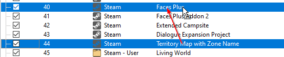
If you drag the mod somewhere there is no text in the line mod (A line should be visible), the dragged mod will be move where the line is visible.


 will appear and the tooltip will show the missing dependency when the cursor pass on it.
will appear and the tooltip will show the missing dependency when the cursor pass on it.